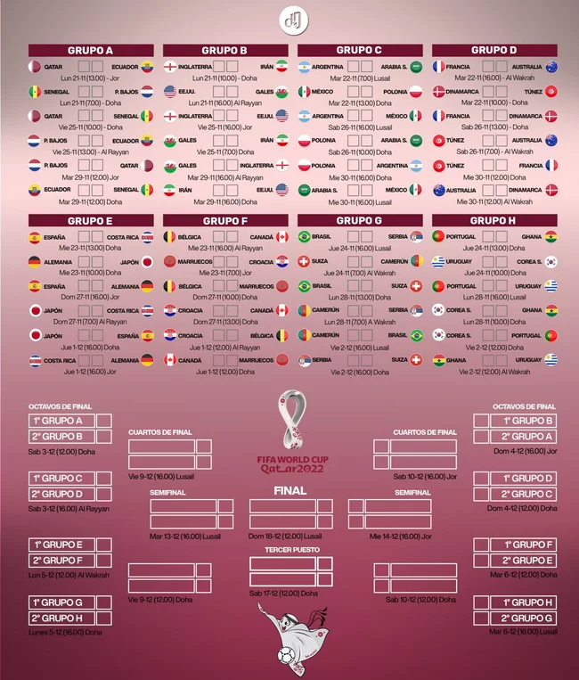
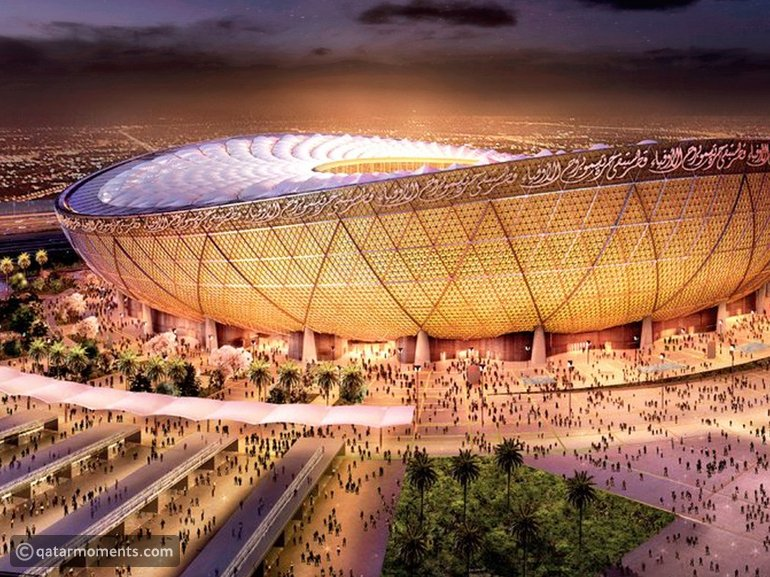

Ya están! Los 32 equipos participantes de Qatar 2022 se dividirán en 8 grupos de 4. De
allí se clasificarán los 2 mejores a los 8vos de final, donde se jugarán 90 minutos y, en caso de
seguir empatados, alargue y penales. Luego se jugarán los 4tos de final, las semifinales y la gran
final. ¿Cuál es el grupo de la muerte? ¿Qué le tocó a Argentina? Entrá para conocer todos los
detalles.

En esta sección conocerás todas las fechas y horarios de los posibles cruces a partir de
los 8vos de final y hasta la gran final que se disputará en el Estadio
icónico de Lusail, ubicado en el municipio de Al Daayen. No te lo pierdas!

El mundial de Qatar 2022 está cada vez más cerca y sólo queda tachar los días.
El sorteo ya está definido y finalmente se conocieron las 32 selecciones que completan el mapa, que se
selló con la clasificación de Costa Rica tras derrotar 1-0 a Nueva Zelanda en el repechaje.

Los partidos del próximo Mundial tendrán lugar en 8 estadios ubicados en 5 ciudades:
Doha, Lusail, Rayyan, Al Khor y Al Wakrah. Las últimas cuatro se encuentran muy cercanas a la capital,
en un radio máximo de 50 kilómetros. Es para destacar el hecho de que se podrá llegar en subte a 7 de
los 8 estadios. El único que exige para el acceso una combinación extra en colectivo es el Al Bayt
Stadium, situado en Al Khor.
